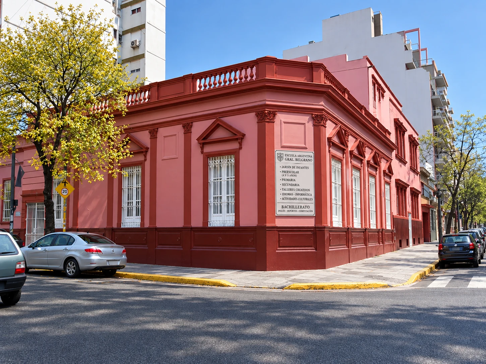
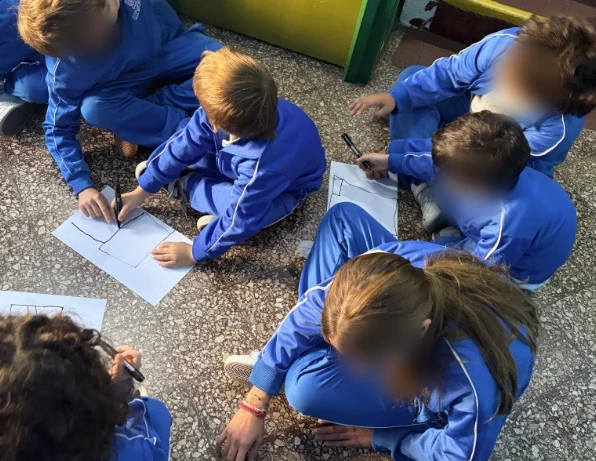
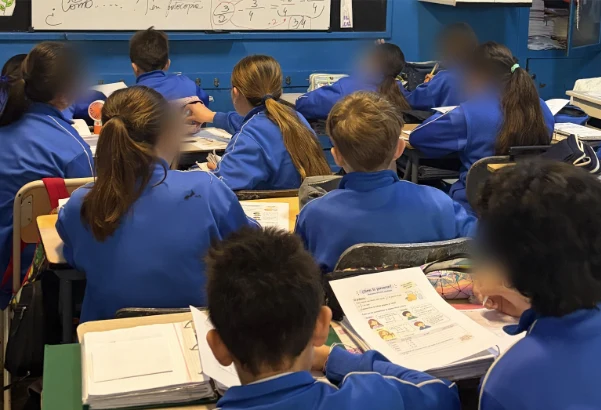

Conceptualización
Texto de conceptualización.
Profesorado Universitario de Educación Primaria · 2026
Florencia Pérez Fernández · UCA
Para mí, el guardapolvo blanco representa mucho más que una profesión. Es parte de mi identidad, de mi vocación y de mi amor por aprender y enseñar. También representa la pertenencia a una comunidad de docentes que aprende y crece junto a otros. Con el tiempo entendí que llevarlo supone una gran responsabilidad.
A través de este Portfolio Integrador los invito a recorrer el camino que transité durante estos cuatro años de formación docente. Un camino hecho de aprendizajes, preguntas, experiencias, aciertos y errores que fueron construyendo mi identidad como docente. A lo largo de estas páginas recupero mi historia personal y vocacional, mi formación y mis experiencias en Primer y Segundo Ciclo, junto con evidencias y huellas de aprendizaje que muestran no solo lo que hice, sino también lo que aprendí y cómo fui transformando mi manera de enseñar.
Hoy, al mirar hacia atrás, puedo reconocer que cada una de esas experiencias fue dejando una huella en la docente que soy. Este portfolio es una invitación a recorrerlas conmigo y a descubrir el camino que me trajo hasta acá.
¿Me acompañás?
Soy Florencia Pérez Fernández, tengo 24 años y podría definirme como una curiosa incurable. Desde chica me encanta aprender, hacerme preguntas y descubrir cosas nuevas. Encontré una pasión especial en las ciencias naturales, una facilidad con los números y un espacio de refugio en la lectura. Pero hay algo que siempre disfruté tanto como aprender: compartir con otros lo que sé y ayudarlos a comprender aquello que les resulta difícil.
Al terminar el colegio, mi camino comenzó en Medicina, carrera que estudié durante dos años. Al mismo tiempo, trabajaba dando clases particulares a chicos de primaria y secundaria y, casi sin darme cuenta, enseñar empezó a ocupar un lugar cada vez más importante en mi vida. Disfrutaba enseñarles, buscar distintas formas de acercarlos a aquello que estaban aprendiendo y acompañarlos en cada logro. Al mismo tiempo, cada clase era también una oportunidad para que yo siguiera aprendiendo: nuevas formas de explicar, de acompañar y de enseñar. Fue en ese intercambio donde empecé a descubrir que había encontrado una profesión en la que mi amor por aprender y por enseñar podían ir de la mano.
Así llegué al Profesorado de Educación Primaria. Una profesión que logró reunir muchas partes de quien soy: mi curiosidad, mis ganas de seguir aprendiendo, el amor por enseñar y el deseo de contagiar en otros ese entusiasmo por conocer. Hoy no sé si fui yo quien eligió la docencia o si, de alguna manera, ella ya me venía eligiendo a mí.
Ver mi CVEn este apartado te invito a conocer mi recorrido por la Residencia Docente, realizada en la Escuela Argentina General Belgrano. A lo largo de esta experiencia transité por Primer y Segundo Ciclo, dos escenarios diferentes que me permitieron seguir aprendiendo y construyendo mi identidad como docente.
Aquí comparto las propuestas de aprendizaje que diseñé e implementé durante mis prácticas, junto con evidencias y huellas de aprendizaje que permiten hacer visible no solo el recorrido de los estudiantes, sino también el mío como docente.
Por último, analizo mi propia práctica a partir de las aptitudes docentes propuestas por el Modelo AIE de la UCA. A través de ellas recupero las decisiones que fui tomando, los aprendizajes construidos y también aquellos aspectos en los que todavía puedo seguir creciendo.
¡Seguime por acá!

La Escuela Argentina General Belgrano, ubicada en Villa Urquiza, es una institución privada, laica y de jornada completa que acompaña a sus estudiantes desde el Nivel Inicial hasta el Secundario. Su misión parte de considerar al alumno como una persona integral, contemplando sus dimensiones intelectuales, morales, afectivas y físicas. Desde esta mirada, busca despertar la curiosidad, recuperar el error como parte necesaria del aprendizaje y formar estudiantes participativos y protagonistas de su propio proceso.
La institución se propone tres objetivos fundamentales (citados de Escuela Argentina General Belgrano, s. f.):
“Preparar a nuestros niños y jóvenes para vivir plenamente el mundo de las comunicaciones, los idiomas, la preeminencia del conocimiento, la competencia y la eficacia.”
“Hacer un colegio cálido y acogedor, pleno de estímulos, vivido con alegría, con orgullo de pertenecer y entusiasmo por participar; un colegio con espacios propicios para el crecimiento individual en un clima de libertad creadora y ordenada convivencia.”
“Ofrecer el marco necesario para la preservación de los valores éticos, la formación espiritual sólida, las pautas de comunicación franca y las relaciones de mutua confianza.”
Acá va a haber algo muy importante. Todavía no sabemos qué.
El curso
Mi residencia en Segundo Ciclo la realicé en un 6to grado conformado por un total de 34 niños. Se caracteriza por ser un grupo cálido y curioso, con mucho interés por aprender y una gran predisposición a participar. Disfrutan de hacer preguntas, compartir lo que saben y conocer más sobre los fenómenos que los rodean.
Es un grupo heterogéneo, con diferentes ritmos y formas de aprender, por lo que resulta importante ofrecer distintos desafíos que permitan que todos puedan participar y avanzar en sus aprendizajes.


En relación con el perfil teórico de los niños, desde la perspectiva de Piaget, los estudiantes de esta edad transitan el final de la etapa de las operaciones concretas y comienzan a aproximarse al pensamiento formal. Mientras que las operaciones concretas permiten razonar lógicamente sobre situaciones concretas, el pensamiento formal supone avanzar progresivamente hacia formas de razonamiento más abstractas, reflexivas y analíticas. Teniendo en cuenta esta transición, en las propuestas de enseñanza decidí partir de situaciones, ejemplos y recursos concretos para avanzar progresivamente hacia relaciones y conceptualizaciones más abstractas.
En los trabajos grupales suelen desenvolverse con bastante autonomía. Logran organizarse, distribuir roles, compartir los materiales y llegar a acuerdos sin requerir constantemente la intervención de un adulto. Además, cuando algún integrante presenta dificultades para comprender una consigna o contenido, suelen ayudarse entre ellos. Esta característica puede vincularse con los aportes de Vygotsky acerca del carácter social del aprendizaje y la Zona de Desarrollo Próximo, entendida como la distancia entre aquello que un estudiante puede resolver de manera independiente y aquello que puede alcanzar con la guía de un adulto o en colaboración con un compañero.
En cuanto a los vínculos, se observan grupos de pertenencia y amistad bastante definidos. Esto puede vincularse con la importancia que adquiere el grupo de pares en esta etapa particular del desarrollo (Arancibia, 2008). En este grado en particular, los alumnos suelen agruparse principalmente por sexo y, entre las niñas, se distinguen diferentes subgrupos con mayor claridad.
En cuanto a algunas características que presenta este grupo en particular, se observa una buena disposición de los niños en los intercambios orales y la construcción colectiva de ideas. Los estudiantes suelen participar activamente y desarrollar sus razonamientos cuando tienen la posibilidad de explicarlos oralmente. Sin embargo, presentan mayores dificultades al momento de expresar y fundamentar esas mismas ideas por escrito.
Planificación
A continuación, se presenta una de las secuencias didácticas implementadas durante mi residencia, en la que se articularon contenidos de Ciencias Naturales y Ciencias Sociales. En primer lugar, se explicitan los contenidos, las capacidades y los objetivos que orientaron la propuesta, junto con el hilo conductor y el recorte didáctico.
Luego, se presenta una ruta que permite recorrer las distintas etapas del proceso de aprendizaje. En cada parada se recuperan las preguntas que guiaron la propuesta y se presentan distintas huellas de aprendizaje que permiten hacer visible el recorrido construido por los estudiantes desde la exploración hasta el desempeño de síntesis.
Finalmente, se incluye una reflexión sobre mi propia práctica a partir del análisis de estas evidencias, reconociendo fortalezas, aspectos a revisar y aprendizajes construidos durante la implementación de la secuencia.
La secuencia didáctica propuso abordar la Educación Ambiental a partir de la articulación entre Ciencias Naturales y Ciencias Sociales, tomando como recorte “El aire que respiramos en nuestro barrio, la atmósfera que compartimos en el planeta: ¿Cómo nuestras formas de vivir pueden transformarla?”. Este recorte resultó pertinente curricularmente porque permitió articular contenidos propuestos por el Diseño Curricular de CABA para segundo ciclo vinculados con la atmósfera terrestre, el clima y su variabilidad debido a causas naturales y humanas, las relaciones entre las sociedades y la naturaleza y el análisis de los problemas ambientales como resultado de múltiples interacciones. Además, fue relevante para los estudiantes porque partió de actividades que forman parte de su vida cotidiana para problematizar cómo nuestras formas de vivir se relacionan con las transformaciones de la atmósfera. De esta manera, se buscó avanzar desde situaciones cercanas hacia la comprensión de una problemática ambiental compleja, estableciendo relaciones entre aspectos naturales y sociales evitando presentar el ambiente como una realidad fragmentada (Rodríguez y Rodríguez Villoldo, 2025).
Desde las Ciencias Naturales, se propuso que los estudiantes no se limitaran a reconocer los componentes de la atmósfera solamente, sino que pudieran avanzar hacia la construcción de explicaciones acerca de cómo esta hace posible la vida y cómo puede transformarse. Para ello, se abordaron su composición y carácter dinámico, el efecto invernadero como fenómeno natural necesario para la vida y su intensificación a partir del aumento de determinados gases, estableciendo progresivamente relaciones con el cambio climático. Para acompañar la construcción de estas explicaciones, la secuencia se organizó a partir de la pregunta “¿Cómo se relacionan las actividades que realizamos todos los días con los cambios que ocurren en la composición del aire?”. Esta pregunta permitió recuperar las ideas iniciales de los estudiantes y retomarlas a lo largo del recorrido para revisarlas y complejizarlas a partir de nuevas evidencias. En este proceso, los textos, gráficos, noticias e imágenes no se presentaron únicamente como fuentes de información, sino como recursos para formular hipótesis, establecer relaciones y construir explicaciones fundamentadas. Como plantea Gellon (2005), las hipótesis se construyen a partir de la experiencia previa y de los datos disponibles, por ello, se buscó que los estudiantes pudieran poner sus primeras ideas en diálogo con las evidencias que encontraron durante la investigación.
Desde las Ciencias Sociales, se buscó ampliar esta explicación incorporando los conceptos de multicausalidad y actores sociales. Para comprender las transformaciones actuales de la atmósfera no alcanza con conocer los procesos naturales involucrados, sino que también es necesario analizar cómo las formas de producir, utilizar energía y transportarse fueron cambiando a lo largo del tiempo. Además, el abordaje de los actores sociales permitió problematizar la idea de que todas las personas tienen la misma responsabilidad frente al cambio climático. Se propuso que los estudiantes analizaran y compararan las responsabilidades y posibilidades de acción de diversos actores, reconociendo que son diferentes. De esta forma, se esperaba superar una mirada centrada únicamente en las acciones individuales y favorecer la construcción de una posición propia fundamentada en evidencias frente a la problemática ambiental. La construcción de esta posición implicó también asumir una mirada ética frente al problema, que permitiera a los estudiantes no sólo comprenderlo, sino también reflexionar sobre las responsabilidades que tienen los distintos actores y las respuestas posibles frente a él.
Para realizar todo lo mencionado anteriormente, se trabajó desde el desarrollo de las capacidades de resolución de problemas y pensamiento crítico, mediante el análisis de fuentes, la construcción de relaciones entre evidencias y la fundamentación de ideas y posiciones frente a la problemática. Finalmente, el desempeño de síntesis permitió integrar estos aprendizajes en una infografía en la que los estudiantes debieron establecer relaciones entre los procesos naturales y sociales, utilizando evidencias para explicar y fundamentar sus opiniones.
2do ciclo
Tocá cada parada de la ruta para ver qué hicimos.
2do ciclo
Al mirar las huellas de aprendizaje, considero que uno de los aspectos más logrados de la secuencia fue la construcción de un recorrido claro que permitió ir complejizando progresivamente las explicaciones de los estudiantes. El hilo conductor, el recorte y las diferentes “subpreguntas” fueron orientando la investigación y permitieron volver en distintos momentos sobre nuestra pregunta y nuestra hipótesis inicial. Esto puede observarse en las producciones de los chicos. Mientras que en las primeras clases aparecían relaciones más generales entre las actividades humanas y las transformaciones de la atmósfera, e incluso algunas confusiones conceptuales, a medida que avanzó la secuencia comenzaron a incorporar sus distintas funciones, a diferenciar el efecto invernadero natural de su intensificación y a relacionar las formas de producción, el uso de la energía, el consumo y las acciones de diferentes actores sociales con las transformaciones de la atmósfera. Hacia el final, estas relaciones volvieron a aparecer integradas en los mapas conceptuales y en las infografías.
Entre las fortalezas de mi práctica, destaco especialmente la posibilidad de observar las respuestas de los estudiantes y tomar decisiones a partir de ellas. Una de las situaciones que considero más significativas ocurrió luego de la primera clase de exploración. Al revisar los tickets de salida, me di cuenta que las respuestas eran todavía muy generales y que no daban cuenta con claridad de las relaciones que habían aparecido durante la clase. Frente a esto, decidí incorporar una clase adicional de 40 minutos para volver sobre las fuentes, recuperar las preguntas de los chicos y acompañarlos en la construcción de una hipótesis que orientara la investigación. También considero especialmente lograda la clase sobre las funciones de la atmósfera. Las huellas permitieron observar cómo las primeras explicaciones, centradas principalmente en la presencia de oxígeno, se fueron ampliando hacia otras funciones como la protección frente a la radiación ultravioleta y la regulación de la temperatura. En esa misma clase, frente a la idea de que el efecto invernadero había sido creado por los seres humanos, pude intervenir a través de preguntas para que fueran los propios estudiantes quienes revisaran esa explicación y diferenciaran el fenómeno natural de su intensificación.
Otra fortaleza que reconozco fue la diversidad de recursos y formas de acercarse al conocimiento que incorporé durante la secuencia. Trabajamos con imágenes, noticias, gráficos, testimonios y textos científicos, pero también con diferentes técnicas de estudio, como la identificación de palabras clave, los cuadros, las redes y los mapas conceptuales. La clase dedicada a las transformaciones sostenibles fue significativa para mí porque permitió enseñar explícitamente algunas de estas herramientas. Los estudiantes tuvieron que seleccionar información, jerarquizar ideas y establecer relaciones para construir por primera vez un mapa conceptual. Durante su elaboración, la circulación por los grupos me permitió advertir dificultades y realizar intervenciones en el momento. Sin embargo, al revisar esta experiencia considero que podría haber incorporado un modelado colectivo más explícito antes de que comenzaran a producir sus propios mapas, especialmente por tratarse de una técnica nueva para ellos.
El análisis de las huellas también me permitió reconocer aspectos que necesito seguir trabajando. Uno de ellos se relaciona con una característica específica de este grupo en la cual a los estudiantes les resultaba más sencillo expresar y desarrollar sus razonamientos oralmente que hacerlo por escrito. Esto se hizo visible en la clase sobre las transformaciones de la Revolución Industrial. Al observar que los cuadros contenían respuestas poco desarrolladas, recurrí a preguntas durante el intercambio oral y allí aparecieron explicaciones y relaciones mucho más ricas. Considero que haber recuperado la oralidad fue una decisión adecuada porque me permitió acceder a lo que habían comprendido, pero hoy pienso que tendría que haber dado un paso más y utilizar ese intercambio para andamiar la escritura. Podríamos haber vuelto colectivamente sobre alguna respuesta y preguntarnos: “¿Esto que escribimos refleja todo lo que acabamos de explicar?”, “¿Qué información nos falta?” o “¿Una persona que no conoce el tema podría comprender nuestra explicación?”. De esta manera, la oralidad no hubiera funcionado solamente como otra forma de mostrar lo aprendido, sino como un punto de apoyo para enriquecer aquello que les resultaba más difícil expresar por escrito.
También reconozco como una cuestión a mejorar algunas decisiones vinculadas con la evaluación. En la clase sobre actores sociales, por ejemplo, los tickets de salida no siempre permitieron construir la explicación general que buscaba, ya que varios estudiantes se centraron en el actor particular que habían investigado. Hoy reformularía esa consigna y acompañaría más la construcción de esa generalización. Además, al revisar toda la secuencia advierto que hubo una presencia importante de producciones grupales. El intercambio entre pares fue valioso, pero hubiera sido necesario incorporar algunas instancias individuales durante el recorrido que me permitieran reconocer con mayor precisión qué relaciones podía establecer cada estudiante de manera autónoma, especialmente antes de llegar al producto final.
Por otro lado, considero que las infografías reflejan el trabajo realizado en torno a los objetivos que me propuse para la secuencia y muestran cómo los estudiantes recuperaron contenidos abordados a lo largo del recorrido. Sin embargo, considero que podría haber destinado más tiempo al proceso de retroalimentación entre pares. Las huellas muestran que algunos grupos realizaron observaciones muy concretas, mientras que otras devoluciones fueron más generales y que no todas las sugerencias recibidas se reflejaron posteriormente en las versiones finales. Si volviera a implementar esta propuesta, enseñaría de manera más explícita cómo realizar una retroalimentación y agregaría un momento posterior para que cada grupo pudiera analizarla y decidir qué sugerencias tomar, cuáles no y por qué.
Para finalizar esta reflexión, esta secuencia también significó un aprendizaje importante para mí en relación con la enseñanza articulada de las Ciencias Naturales y las Ciencias Sociales. La preparación de las clases me llevó a profundizar contenidos de ambas áreas que no recordaba o que necesitaba volver a estudiar y me permitió reconocer la importancia de conocerlos en profundidad para poder seleccionar fuentes, formular buenas preguntas y acompañar las explicaciones de los estudiantes. En este sentido, uno de los aprendizajes que más valoro fue haber trabajado a partir de una pregunta investigable y haber acompañado a los chicos en la construcción de una hipótesis que orientara el recorrido. Al volver sobre lo planteado por Gellon (2005), quien sostiene que formular preguntas es una habilidad que debe desarrollarse y que las hipótesis se construyen a partir de la experiencia previa y los datos disponibles. Además, considero valioso haber sostenido el trabajo con distintas fuentes y haber incorporado la perspectiva del desarrollo sostenible. Esto me permitió implementar una idea que Rodríguez y Rodríguez Villoldo (2025) desarrollan en relación con la enseñanza de las Ciencias Sociales, las fuentes constituyen un modo de conocer la realidad social y su trabajo requiere explorarlas y analizarlas, mientras que las buenas preguntas deben permitir ir más allá de la recuperación de información para construir posiciones propias y fundamentadas. En este sentido, considero que la secuencia no terminó solamente en comprender cómo las actividades humanas transforman la atmósfera, sino que permitió avanzar hacia la pregunta por las alternativas posibles para satisfacer nuestras necesidades de manera sostenible. Este trabajo resultó importante para mí porque permitió que los estudiantes pudieran analizar distintas posibilidades, considerar las responsabilidades de diferentes actores desde distintas fuentes y comenzar a construir una posición fundamentada frente a la problemática ambiental.
Para mis futuras prácticas, me gustaría conservar esta forma de enseñar ambas áreas de manera articulada, fortaleciendo especialmente el andamiaje de la escritura, las evidencias individuales y los espacios destinados a revisar y mejorar las propias producciones.
2do ciclo
Texto de conceptualización.
Texto de diagnóstico.
Texto de gestión efectiva.
Texto de comunicación.
Texto de interacción inclusiva.
Querida [destinataria]:
Primer párrafo de la carta.
Segundo párrafo de la carta.
Tercer párrafo de la carta.
Con cariño,
Flor
Me imagino como una maestra que [tu frase sobre el futuro]. Quiero seguir aprendiendo, [...].
Texto sobre tus fortalezas durante la residencia.
Texto sobre las dificultades y cómo las enfrentaste.
Texto sobre lo que aprendiste y lo que seguirías mejorando.